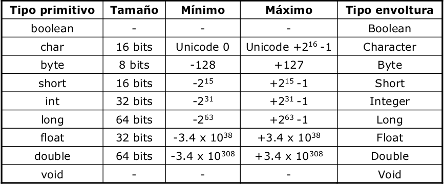
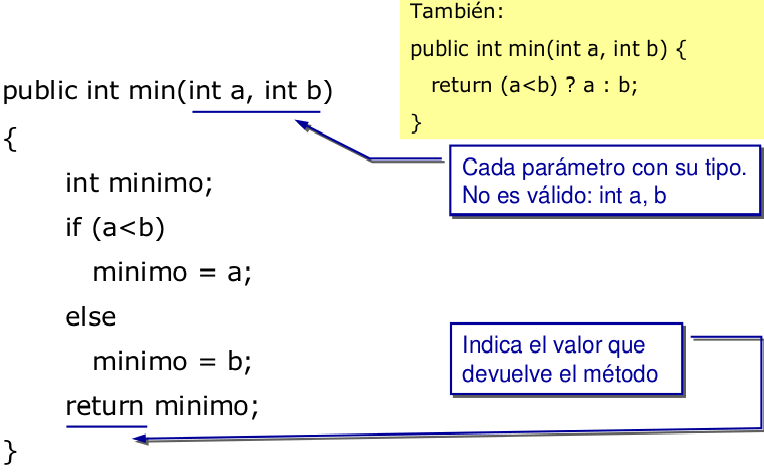

3.1 Instrucciones de programa 3.2 Variables, literales y tipos de datos 3.3 Expresiones y operadores 3.4 Arreglos y cadenas 3.5 Ciclos y condiciones
La programación orientada a objetos se basa en la programación de clases, siguiendo las siguientes reglas:
Un programa se construye a partir de un conjunto de clases.
Clase: una agrupación de atributos (variables) y de métodos(funciones), que operan sobre los datos.
A estos datos y funciones pertenecientes a una clase se les denomina atributos y métodos.
Todos los métodos y atributos se definen dentro del bloque de la clase.
Las estructuras de datos y los detalles de la implementación de una clase se hallan ocultos de otras clases del sistema.
Control de acceso a variables y métodos, accesso:
private: sólo pueden ser accedidos desde dentro de la clase (no desde las subclases).
protected: sólo pueden ser accedidos dentro de la clase, las subclases de la clase y las clases del paquete.
public: cualquier clase desde cualquier lugar puede acceder a las variables y métodos
friendly o package: (opción por defecto si no se indica nada): son accesibles por todas las clases dentro del mismo paquete, pero no por los externos al paquete (es como si fuese public, pero sólo dentro del package)
Es la capacidad de tener métodos con el mismo nombre (y argumentos) y diferente implementación.
Una operación puede tener más de un método que la implementa.
El tamaño de los tipos no varía entre sistemas operativos:

Clases envoltura de los tipos primitivos:
Se puede declarar un tipo primitivo como no primitivo (manejo como objeto). Ejemplo:
1 char c = 'x';
2 Character C = new Character('x');
3 c = C.charValue();
+, -, *, /, %=, +=, -=, *=, /=, %=++, -->, >=, <, <=, ==, !=&&, ||, !, &, |+1 d = e++; // Se asigna e a d y luego se incrementa e
2 d = ++e; // Se incrementa e y luego se asigna e a d
3
4 a += b; // equivale a x = x + y;
5 a *= b; // equivale a x = x * y;
6
7 c = 3;
8 a = c++; // Resultado: a = 3 y c = 4
9 a = ++c; // Resultado: a = 4 y c = 4
1 String concatenado = “perro” + “gato”
2 // Resultado perrogato
1 // comentarios para una sola línea
2
3 /* comentarios de una
4 * o más líneas
5 **/
return;.
| Table of Contents | t |
|---|---|
| Exposé | ESC |
| Full screen slides | e |
| Presenter View | p |
| Source Files | s |
| Slide Numbers | n |
| Toggle screen blanking | b |
| Show/hide slide context | c |
| Notes | 2 |
| Help | h |